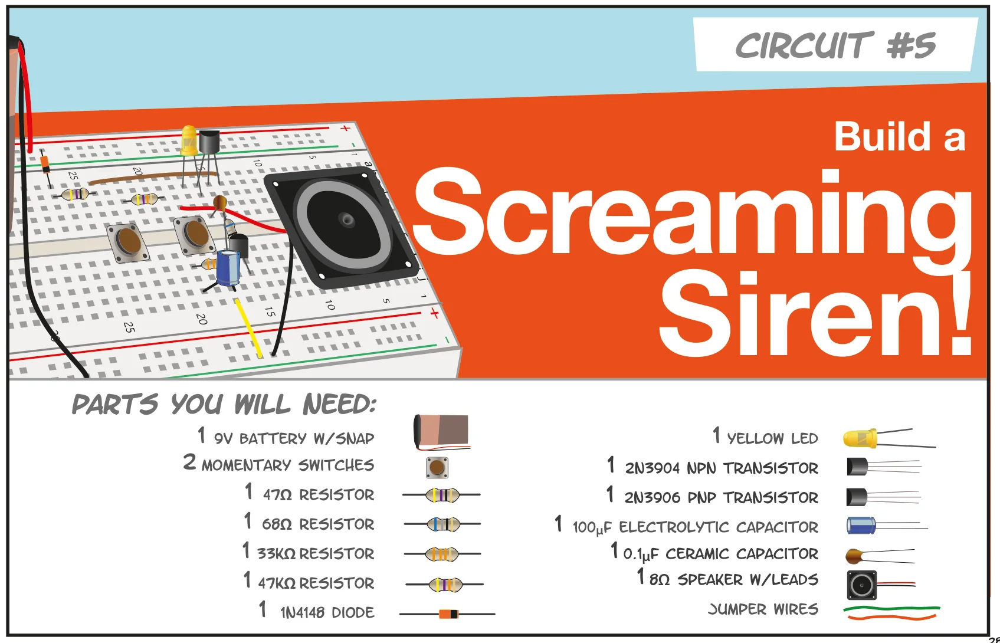
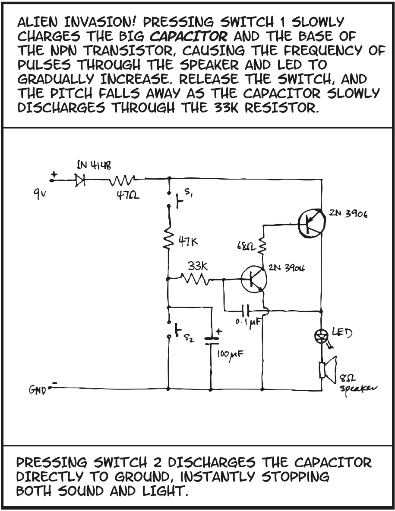
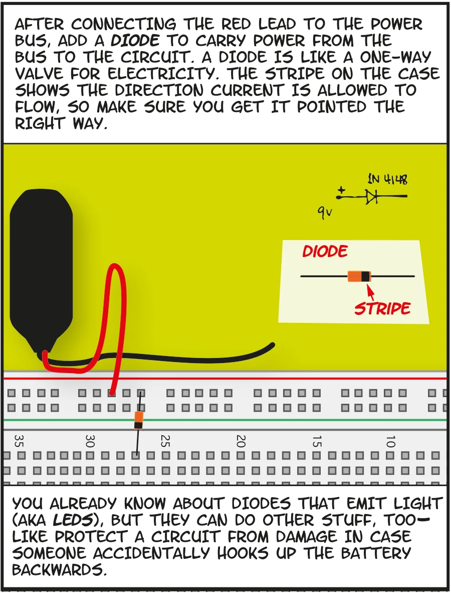
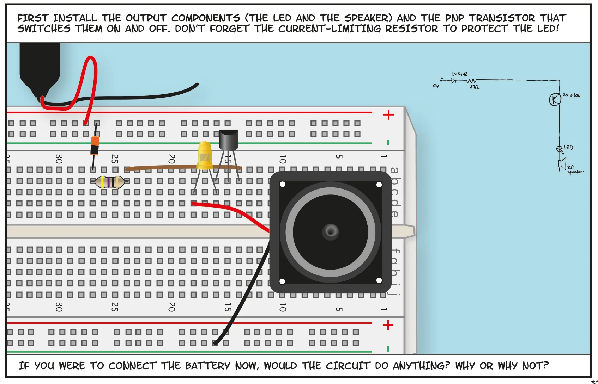
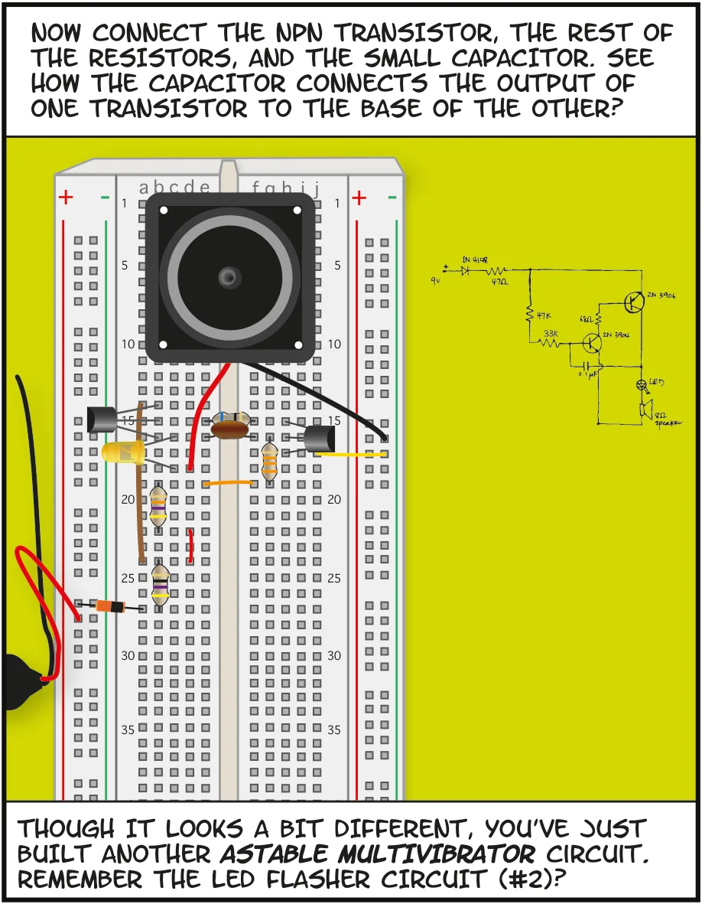
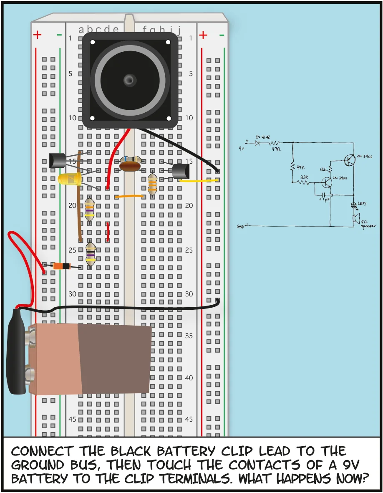
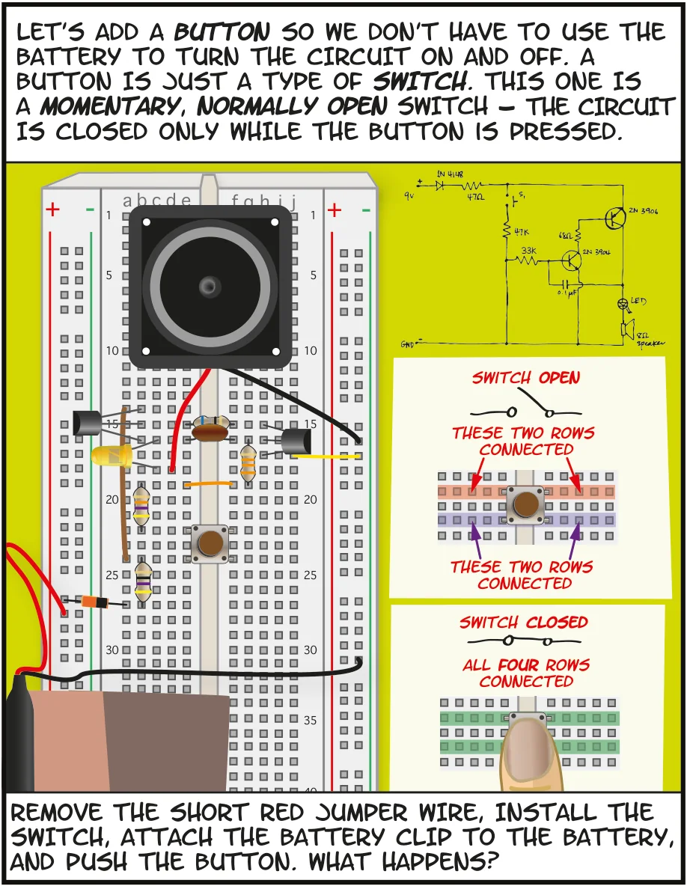
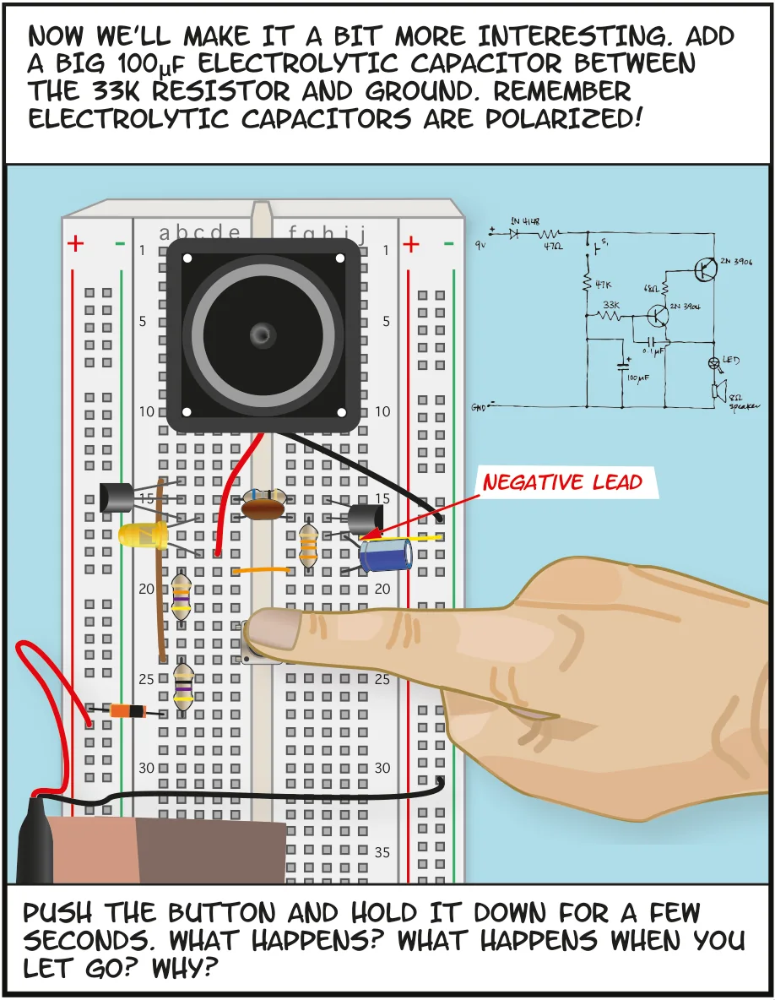
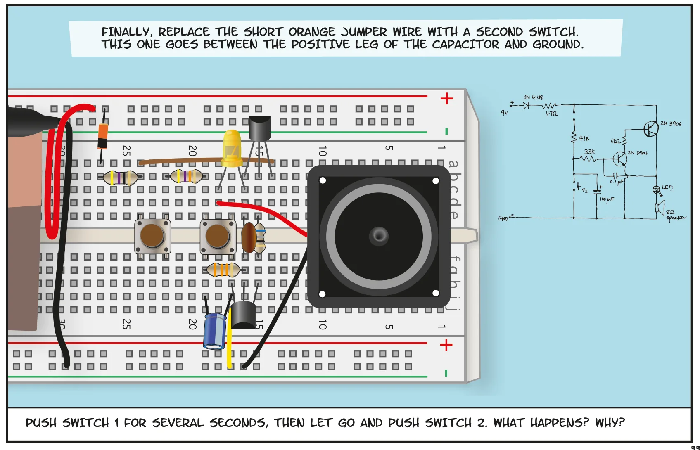

Alien invasion! Pressing switch 1 slowly charges the big capacitor and the base of the NPN transistor, causing the frequency of pulses through the speaker and LED to gradually increase. Release the switch, and the pitch falls away as the capacitor slowly discharges through the 33K resistor.
Pressing switch 2 discharges the capacitor directly to ground, instantly stopping both sound and light.

After connecting the red lead to the power bus, add a diode to carry power from the bus to the circuit. A diode is like a one-way valve for electricity. The stripe on the case shows the direction current is allowed to flow, so make sure you get it pointed the right way.
You already know about diodes that emit light (AKA LEDs), but they can do other stuff, too- like protect a circuit from damage in case someone accidentally hooks up the battery backwards.

First install the output components (the LED and the speaker) and the PNP transistor that switches them on and off. Don't forget the current-limiting resistor to protect the LED!
If you were to connect the battery now, would the circuit do anything? Why or why not?

Now connect the NPN transistor, the rest of the resistors, and the small capacitor. See how the capacitor connects the output of one transistor to the base of the other?
Though it looks a bit different, you've just built another astable multivibrator circuit. Remember the LED flasher circuit (#2)?

Connect the black battery clip lead to the ground bus, then touch the contacts of a 9V battery to the clip terminals. What happens now?

Let's add a button so we don't have to use the battery to turn the circuit on and off. A button is just a type of switch. This one is a momentary, normally open switch - the circuit is closed only while the button is pressed.
Remove the short red jumper wire, install the switch, attach the battery clip to the battery, and push the button. What happens?

Now we'll make it a bit more interesting. Add a big 100µF electrolytic capacitor between the 33K resistor and ground. Remember electrolytic capacitors are polarized!
Push the button and hold it down for a few seconds. What happens? What happens when you let go? Why?

Finally, replace the short orange jumper wire with a second switch. This one goes between the positive leg of the capacitor and ground.
Push switch 1 for several seconds, then let go and push switch 2. What happens? Why?